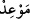
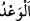
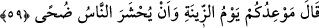

Şimdi sen, seninle bizim aramızda, ne senin ne de bizim muhalefet etmeyeceğimiz
uygun bir yerde buluşma zamanı ayarla.
“Öyle ise, muhakkak sûrette biz de sana, aynen onun gibi bir büyü getireceğiz.”
Sanki şöyle denilmiştir: “Eğer durum bundan ibâretse andolsun ki senin sihrin gibi bir
sihir de biz getireceğiz, sen bize galebe çalamayacaksın. Yani senin gibi bir büyücü
getireceğiz, onunla seni karşı karşıya getireceğiz ki insanlar senin sanatının büyücülük
olduğunu bilsinler.
“Şimdi sen,” sihir göstermek için “seninle bizim aramızda, ne senin ne de bizim
muhalefet etmeyeceğimiz uygun bir yerde buluşma zamanı ayarla.” Bâzı âlimler
burada “
” ile buluşmaya sözleştikleri yerin kasdedildiğini söylerler.
“
” sözlükte olmadan önce bir menfaati haber vermektir. “
” ise sözü yerine
getirmemektir.
Yani, sen aramızda her iki tarafa eşit uzaklıkta orta bir yer bul ki bir taraf diğerine
göre daha avantajlı olmasın. Ya da sen düz bir yer bul ki, yüksekliği ve alçaklığı
görmeye mâni olmasın. Yâni Fir’avn şöyle dedi: ‘Bir vakit tâyin et ki belirlenen vakit
gelince benim ve senin kavmine mesafe olarak eşit olan bir yerde ya da alçaklığı
yüksekliği olmayan, insanların ve bakanların görmesi mümkün olacak düz bir yerde
hazır olayım.’
Lânetli Fir’avn, kendisine korkak denilmesini engellemek, zaman uzak da olsa yakın
da olsa karşı koymak için gerekli sebepleri hazırlamaya muktedirmişçesine buluşma
yerini ve zamanını belirlemeyi Mûsâ (a.s.)’a bırakmıştır.
et-Te’vîlâtü’n-Necmiyye’de der ki: “Fir’avn Mûsâ (a.s.)’dan bir zaman tâyin etmesini
istemiştir. Çünkü sihirbaz sihrini hazırlamak için uzun zamana ihtiyaç duyar. Mûcize
sâhibi ise mûcize ızhâr etmek için belli bir zamana ihtiyaç duymaz.”
59. Mûsâ: “Buluşma zamanınız, bayram günü, kuşluk vaktinde insanların
toplanma zamanı olsun.” dedi.
“Mûsâ: “Buluşma zamanımız;” insanların çeşitli yerlerden gelerek büyük bir
kalabalık oluşturdukları Kıptîler’in “bayram günü, kuşluk vaktinde insanların
toplanma zamanı olsun.” dedi.” Hz. Mûsâ, belki onlar bu kalabalıktan utanarak sihri
geçersiz kılan mûcizeyi inkâr edemezler, diye böyle olmasını istedi. Onlar buluşmak
için bir yer istedikleri halde Mûsâ (a.s.) belli bir zaman tayin etti. Çünkü bayram günü
insanların o günde buluştuğu meşhur bir mekâna delâlet eder.
Bilesin ki beş bayram vardır: Birincisi İbrahim (a.s.)’ın kavminin bayramıdır. O
günde İbrahim (a.s.) putları paramparça etmiştir. İkincisi, Fir’avn’un kavminin
bayramıdır. O “yevmü’z-zîne (süslenme günü)”dür. Üçüncüsü, Mâide sûresinin sonunda